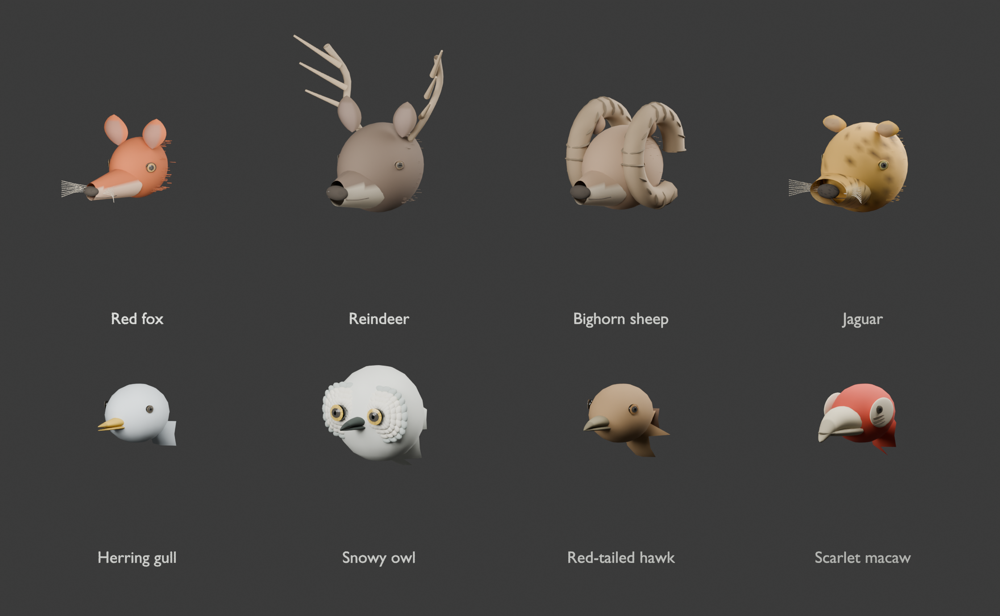
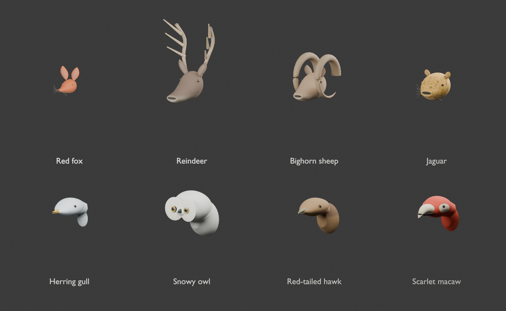

Wildlife refinement
Same camera, lighting and animal scale. Drag to compare version 8 with version 9.


Version 8Version 9Actual assembled game geometry rendered in Blender. Face views crop the body and neck. These are static geometry reviews; the in-game captures separately verify moving animals, terrain alignment and quality settings.
Original procedural models and markings. No downloaded scans or photographs. Version 8 images reuse the verified baseline after confirming its exported geometry is byte-for-byte identical.